<!DOCTYPE html>
<html lang="ko">

</html>

<head>
    <meta charset="UTF-8">
    <meta http-equiv="X-UA-Compatible" content="IE=edge">
    <meta name="viewport" content="width=device-width, initial-scale=1.0">
    <link rel="stylesheet" href="css/header.css">
    <link rel="stylesheet" href="css/footer.css">
    <link rel="stylesheet" href="css/landing/index.css">
    <link rel="stylesheet" href="css/landing/button.css">
    <script src="https://use.fontawesome.com/releases/v5.2.0/js/all.js"></script>
    <title>
        꼬기조아
    </title>
</head>

<body style="background-color:#262223">
    <nav class="mobile-menu">

        <label for="show-menu" class="show-menu"><span>Menu</span><div class="lines"></div></label>

        <input type="checkbox" id="show-menu">
        <ul id="menu">
            <li style="font-size: 25px;"><a href="index.html">COWPIG</a></li>


            <li style="visibility: hidden;"><a href="#">INTRODUCING</a></li>


            <li style="visibility: hidden;"><a href="#">INTRODUCING</a></li>
            <li><a href="landing.html">INTRODUCING</a></li>

            <li><a href="cow.html">COW</a></li>
            <li> <a href="pig.html">PIG</a> </li>
            <li> <a href="map.html">INFORMATION</a> </li>

            <li><a href="list.html">BOARD</a></li>
            <!-- <li><a href="#">Contact</a></li> -->
            <li style="visibility: hidden;"><a href="#">Contact</a></li>
            <!-- <li style="visibility: hidden;"><a href="#">Con</a></li> -->

            <li>
                <div style="color:white;width:20px; text-align: right;"></div>
                <a href="#"><i class="far fa-user" style="font-size:30px;"></i></a>
                </div>
            </li>

        </ul>
    </nav>


    <script type="text/javascript" src="button.js"></script>

    <br/><br/><br/><br/><br/><br/>

    <span style=" font-size:1.5em;  color: #f3f3f3;">
            <strong>
                <div style="text-align:center">
                    <h2>
                        <p>Meet Yout Meat 소개</p>
                    </h2>
                </div>
            </strong>
        </span>

    <br/><br/><br/>

    <span style=" font-size:1.0em;  color: #f3f3f3;">
            <div style="text-align:center">
                <p>"고기의, 고기에 의한, 고기를 위한"</p>
            </div>
            <div style="text-align: center;"></div>
        </span>

    <br/><br/>

    <span style=" font-size:0.8em;  color: #f3f3f3;">
            <div style="text-align:center">
                <p><strong>알고 먹으면 맛도 두 배라는 말이 있다. </strong><br/><br>
                    ‘Meet your Meat’은 소와 돼지의 각 부위별 설명과 다양한 조리법을 소개하여 사용자가 더 맛있는 고기를 즐기기 위해 제작을 결정하게 되었다.<br/>
                    더 나아가 사용자 주변의 정육점 위치와 리뷰를 볼 수 있는 ‘Meat Area’ 기능을 통해 질 좋은 고기를 구매할 수 있도록 한다. <br/>
                    이처럼 최상급의 고기와 최적의 레시피로 사용자가 고기의 맛을 최대화해 먹을 수 있다는 효과를 기대할 수 있다. <br/><br/>
                    또한, 추후 정육점과의 제휴를 통해 ‘생고기 배달 서비스’라는 새로운 개념의 배달 기능을 도입한다면 신선한 생고기를 주변 정육점에서 바로 받아볼 수 있다. <br/>
                    고기의 각 부위별 설명 기능에서 사용자가 조리해보고자 하는 고기를 선택하고, ‘Meat Area’에서 주변 정육점을 검색해 해당 고기를 파는 곳을 확인할 수 있다. 
                </p>
                <br/>
                <script>
                    function mvcow(){
                        location.href="cow.html";
                    }
                    function mvpig(){
                        location.href="pig.html";
                    }
                </script>

                <br/>
                    <button class="draw meet" onclick="mvcow()">Go Cow</button>
                    <button class="draw meet" onclick="mvpig()">Go Pig</button>
            </div>  
    </span>
    <!-- footer -->
    <footer class="s-footer">
        <span>Contributor<br>
            김률아 hobby0519@gmail.com<br>
            강혜연 @gmail.com<br> 
            심성현 qaz74792@gmail.com<br>
            이호영 @gmail.com<br> 
            허미림 wowoo3545@gmail.com</span><br>
        <span>© Copyright Meet your Meat 2021</span>
    </footer>
</body>

</html>